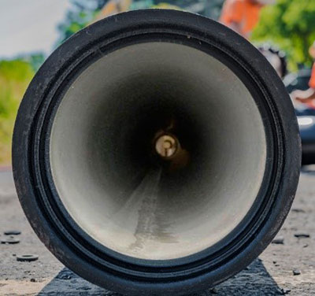

Constellation Marine services are pleased to announce the successful completion of a Port Captaincy evolution for loading a length of 7.5 kilometers of Ductile Iron cement coated pipe onboard a bulk carrier in Abu Dhabi.
With over 1000+ port captaincy and supercargo services performed over the last 10 years; it came as no surprise that Constellation Marine services were chosen over the multitude of survey companies in the UAE for this particular attendance.
The diverse experience of Constellations staff consisting of Chartered Engineers, Naval Architects, and Master Mariners, and combination of expertise permits Constellation to offer a full range of vessel attendance services irrespective of the commodity shipped or the vessel type.
For this particular attendance, the cargo to be shipped was 1263 ductile iron pipes of 2.2 meters diameter each, and of a length 5 meters and 6.2 meters each, constructed with an extended socket at one end.
Because of the nature of construction of the pipes, its length of sea passage, its commercial value, and end-user requirements, the loading, dunnaging, lashing, and chocking requirements were to exact specifications, with very little or no leeway provided in its stowage.
Constellation attendance for the loading project was undertaken by Capt. Vispy Dadimaster and Engineer Fahad Ansari, who remained on board throughout the loading process.

The pre stowage plan prepared was to have the pipes loaded in tiers, 9 high for the center stack, and 6 high on the end stacks, due to the restriction of the extended coamings forward and aft of each hatch.
The dunnage requirements and its placement were extremely critical and given the dimension of the hold and the length of the pipes, there was no room for errors in measurement which could lead to stack clearances not being maintained. In view of the same, our cargo superintendents themselves drew up plans for dunnage laying in each hold and were present themselves to ensure the correct distances were maintained.
There was a high level of coordination required between all parties, the shipper, the port stevedores, and port appointed carpenters, to ensure that the loading progressed smoothly and to the extent, uninterrupted.
In view of the extremely high amount of intermediate and side chocking and dunnaging required, it was imperative that there was a steady flow of dunnage separation available to keep up with the flow of pipes arriving at the ship's rails for loading. This was successfully coordinated with the ship's agents and the port stevedores, to ensure the least idle time during the process.
In addition to the loading supervision, a continuous watch and record were maintained for the condition of the pipes, especially for its inner surface cement coating, and all exceptions were noted and provided to the shipper timely.
Our cargo superintendents maintained a continuous vigil on the critical stack clearances during the loading process, and also on the corner chocking to ensure the stow remained compact and with no possibilities of shifting during the sea passage.
As the stack tiers increased upwards, there was considerable difficulty observed in loading the pipes under the extended coamings, and our cargo superintendents were at hand to provide options and changes in stow plan, to the full satisfaction of the shipper and the Master of the vessel.
Due to the large diameter of the individual pipes and the stack weight on the lower pipes very close to the maximum permissible restrictions, our cargo superintendents assisted the shippers in continuous measurement of the ovality of the pipe during the loading process, to ensure that they remained within the allowable tolerances.
Post completion of the loading, the cargo stow was found compact, in line with the specified requirements, and lashed to the complete satisfaction of the ship's command.
At constellation Marine services, we are committed to offer our clients bespoke solutions and services to any requirement, through its propriety offices located all across the UAE, and its knowledge and expertise of its staff which is second to none.
About the Authors:
Capt. Vispy Rusi Dadimaster A career spanning 22+
years in various operation and management positions within the Maritime
and Shipping Industry, including 8+ years in Fujairah (Port Operation,
Agency and Logistic Management), and in command of various types
of vessels, including Offshore Dynamic Positioning crafts. Within
the professional roles held, I have proven to be result oriented,
decisive, possess tremendous interpersonal skills, and am technically
oriented My entrepreneurship skills have enabled me to lead and
managed teams up to 25 people successfully, achieving challenging
objectives, within challenging environments, with an aim to create
a positive outcome and impact.